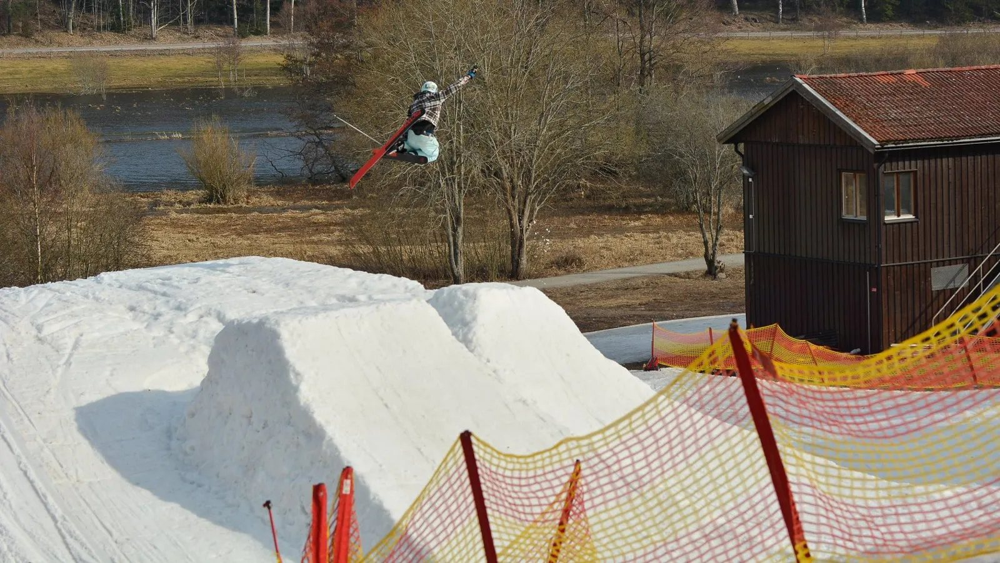

Vägval
Vad vill du göra?


Engagera dig
Bli en del av föreningen
Uppsala Crew drivs helt ideellt. Det finns många sätt att hjälpa till, från en timme på en tävling till att bli instruktör.
Föreningen
Läs om våra sporterPlatser
- Sunnerstabacken
Funpark med hopp och rails
Här håller vi till på vintern. Utrustning att låna och coachning av våra instruktörer.
Till Sunnerstabacken  Allis Uppsala
Allis UppsalaSkatehall med bowl och street
Hit flyttar skateskolan när det blir för kallt ute.
Till Allis Uppsala- KAP-rampen
Miniramp vid Kapellgärdet
Skateskolans hemmaplan och platsen för Miniramp Madness. Ulleråkersvägen 22.
Till KAP-rampen
Uppsala Crew i siffror
En förening, tre sporter, hela Uppsala
Uppsala Crew Idrottsförening startade 2022. Vi arbetar för bättre förutsättningar att åka skateboard, snowboard och freeski i Uppsala, på Allis, KAP-rampen, Kapellgärdet och i Sunnerstabacken.

- 012022Året föreningen grundades
- 023Sporter: skate, snowboard, freeski
- 034Platser i Uppsala
- 0450–100krMedlemsavgift per år
Vårt ansvar
Idrott för alla, oavsett plånbok
Skateboard och parkåkning kräver lite pengar och passar många som inte trivs i traditionella lagsporter. Barn och vuxna åker tillsammans, på samma villkor.
- 50–100 krmedlemsavgift per år, du väljer själv
- Från 5 årbarn och vuxna på samma ramp
- Egen klassför tjejer, med prispengar på våra tävlingar
Aktiviteter
Alla aktiviteterTräning och tävlingar
Snow
Skate
Historia
Föreningens historia
Från start 2022 till i dag.
- 2022Uppsala Crew Idrottsförening bildas.
- 2023Första Miniramp Madness på KAP-rampen.
- 2024Freeskilandslaget besöker Sunnerstabacken. Gijs Weijer målar Uppsala Crew.
- 2025Uppsala Rail Jam med Backyard Session Tour.
Genvägar